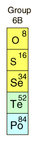

|
 | The Oxygen Group
Oxygen, in Group VI of the Periodic Table, makes up nearly half of the Earth's crust by mass. Oxygen produced by plants over geologic time has contributed the oxygen to the Earth's atmosphere which sustains life. Oxygen in the atmosphere is in the pure diatomic molecular state, but most of the oxygen on the Earth is in minerals such as the silicates.
Sulfur is an abundant Group VI element, mined for the extensive production of sulfuric acid.
|